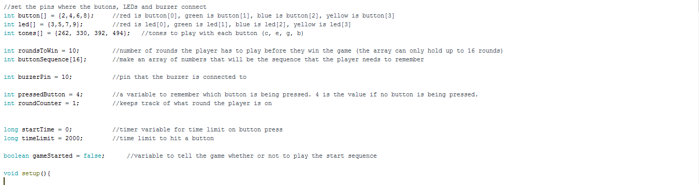
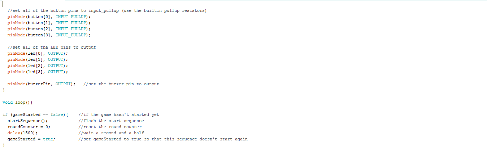
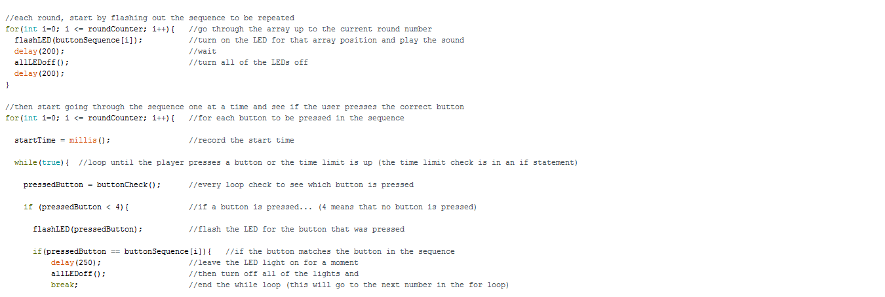
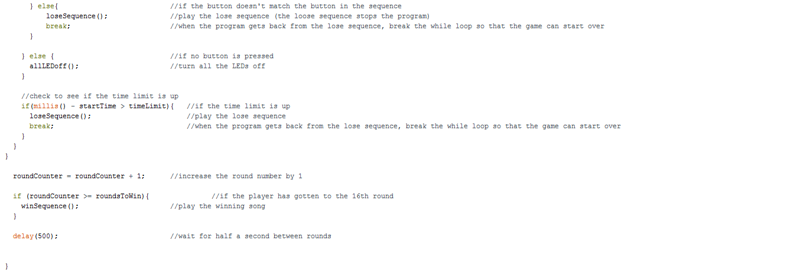
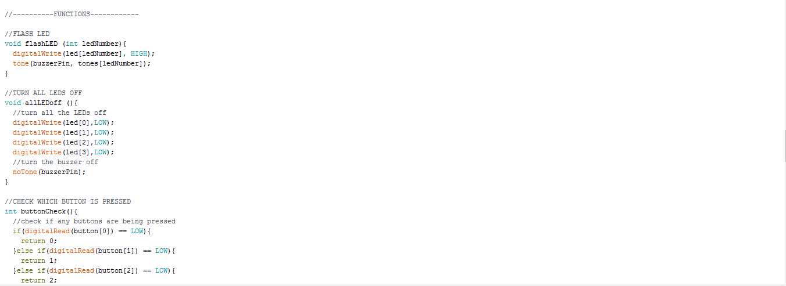
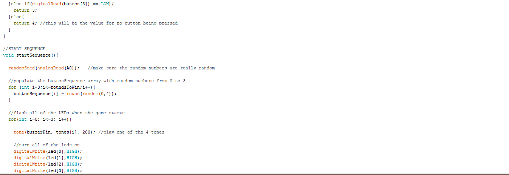
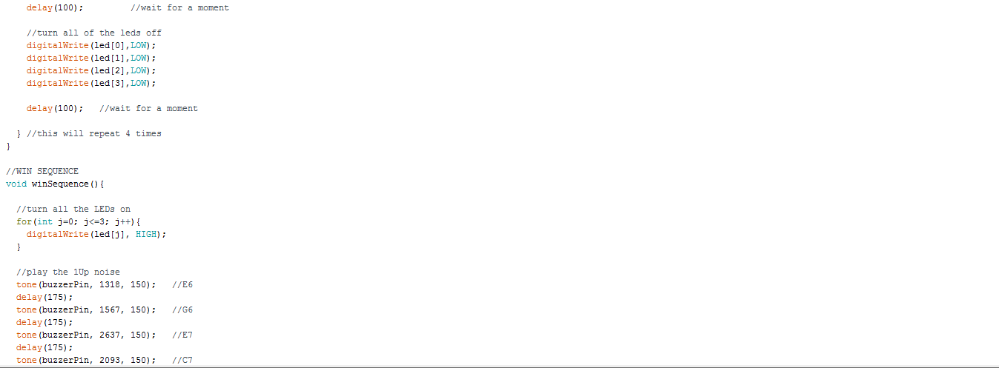
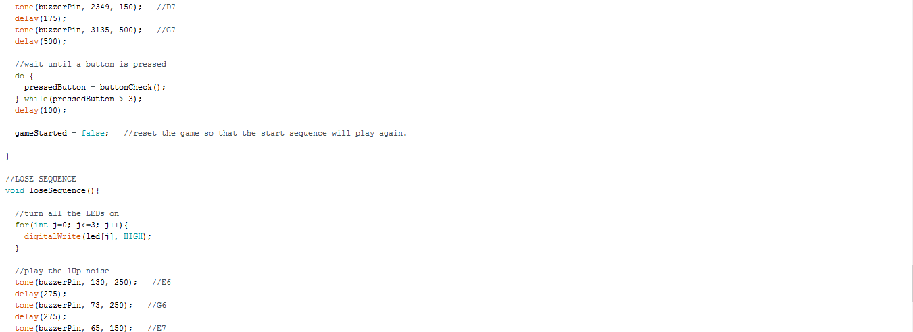
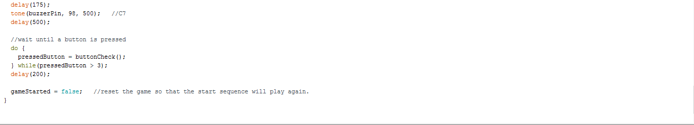

Simon Says
This code is essentially an arduino version of the game Simon Says. I like to call it Simon Says (But makeshift). In this project, we actually had to connect our computers to a piece of technology called an, "Arduino Breadboard" (Picture below). After extensive wiring of the breadboard using information from an Arduino handbook, I created a board compatible with my code and used it to essentially make "Simon Says" but on the board. This was one of the more complicated projects that I had to complete and one of the ones that I am the most proud of.
        Here is the arduino breadboard I discussed at the top of the page.